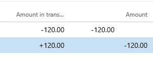

Stornobuchung
Important
Dynamics 365 for Finance and Operations hat sich zu speziell entwickelten Anwendungen entwickelt, mit denen Sie bestimmte Geschäftsfunktionen verwalten können. Weitere Informationen zu diesen Änderungen finden Sie im Dynamics 365-Lizenzierungshandbuch.
Stornobuchung ist die Verwendung negativer Zahlen, um Originaleinträge im Journalkonto rückgängig zu machen.
Stornobuchung ist die Verwendung negativer Lastschrift- oder Gutschriftbeträge, um Originaleinträge im Journalkonto rückgängig zu machen. Buchhalter schreiben Stornoeinträge üblicherweise in roter Farbe, deshalb wird diese Buchungsform auch als Rotes Storno bezeichnet. Mit einer Stornobuchung können Sie ein Dokument mit fehlerhaften Beträgen stornieren, Sie sollten nach der Stornierung jedoch immer den richtigen Dokumentenbetrag eingeben.
Beispiel
Ein Buchhalter bucht eine Rechnung von einem Zulieferer über 120 USD. Beim Zahlungsprozess wird festgestellt, dass der Buchhalter versehentlich 120 USD statt 102 USD eingetragen hat. Jetzt muss der Buchhalter ein Storno für das Originaldokument erstellen und dann die richtige Rechnung über 102 USD erstellen. Weitere Informationen finden Sie unter Überblick über Lieferantenrechnungen. Die folgende Tabelle zeigt die allgemeine Eingabe für Storno.
| Dokumentkennung | Konto | Soll | Haben | Kommentar |
|---|---|---|---|---|
| Invoice0001 | Einkaufskonto | 120 | Originalrechnung (fehlerhaft) | |
| Invoice0001 | Zuliefererkonto | 120 | Originalrechnung (fehlerhaft) | |
| Storno0001 | Einkaufskonto | -120 | Storno | |
| Storno0001 | Zuliefererkonto | -120 | Storno | |
| Invoice0002 | Einkaufskonto | 102 | Richtige Rechnung | |
| Invoice0002 | Zuliefererkonto | 102 | Richtige Rechnung |
In diesem Beispiel zeigt die Saldenaufstellung Folgendes.
| Konto | Soll | Entlastung | Bilanz |
|---|---|---|---|
| Einkaufskonto | 102 | 0 | 102 |
| Zuliefererkonto | 0 | 102 | -102 |
Unterschiede zwischen Storno- und umgekehrten Einträgen
Es gibt zwei Möglichkeiten, Buchungseinträge zu korrigieren – Gegenbuchung und Storno. Wenn Sie eine Gegenbuchung verwenden, wird eine Kopie des Originaleintrags mit umgekehrten Soll- und Habenkonten erstellt und der Betrag behält dasselbe Vorzeichen. Wenn Sie Storno verwenden, erzeugt das System eine Kopie des Originaleintrags, aber die Beträge werden mit negativem Vorzeichen aufgezeichnet. Die folgende Tabelle zeigt die allgemeine Eingabe für Storno.
| Dokument-ID | Konto | Soll | Haben | Kommentar |
|---|---|---|---|---|
| Invoice0001 | Einkaufskonto | 120 | Originalrechnung (fehlerhaft) | |
| Invoice0001 | Zuliefererkonto | 120 | Originalrechnung (fehlerhaft) | |
| Reverse0001 | Einkaufskonto | 120 | Stornieren | |
| Reverse0001 | Zuliefererkonto | 120 | Stornieren | |
| Invoice0002 | Einkaufskonto | 102 | Richtige Rechnung | |
| Invoice0002 | Zuliefererkonto | 102 | Richtige Rechnung |
In diesem Beispiel zeigt die Saldenaufstellung Folgendes.
| Konto | Soll | Entlastung | Bilanz |
|---|---|---|---|
| Einkaufskonto | 222 | 120 | 102 |
| Zuliefererkonto | 120 | 222 | -102 |
Beachten Sie, dass die Salden nach der Gegenbuchung und nach dem Storno gleich sind. Es gibt einen Unterschied zwischen Sollumsatz und Habenumsatz, weil die Gegenbuchung einen redundanten Soll- und Habenumsatz erzeugt. Die Gegenbuchung wird in Ländern/Regionen verwendet, wo selten ein Kontoumsatz verwendet wird. Andere Länder/Regionen verwenden eine Stornobuchung.
Teilstorno
Teilstorno ist die Verwendung negativer Lastschrift- oder Gutschriftbeträge bei der Buchhaltung, um einen Teil der Originaleinträge im Erfassungskonto rückgängig zu machen. Einige Länder/Regionen gestatten die Verwendung eines Teilstornos. Angenommen, ein Buchhalter bucht eine Rechnung von einem Zulieferer über 120 USD. Beim Zahlungsprozess wird festgestellt, dass der Buchhalter versehentlich eine falsche Zahlenfolge eingegeben hat. Die Originalrechnung über 102 USD hatte einen Fehler in der Zahlenfolge.Mit Teilstorno kann der Buchhalter ein Storno über 18 USD erstellen. Die folgende Tabelle zeigt die allgemeine Eingabe für das Teilstorno.
| Dokument-ID | Konto | Soll | Haben | Kommentar |
|---|---|---|---|---|
| Invoice0001 | Einkaufskonto | 120 | Originalrechnung (fehlerhaft) | |
| Invoice0001 | Zuliefererkonto | 120 | Originalrechnung (fehlerhaft) | |
| Storno0001 | Einkaufskonto | 18. - | Teilstorno | |
| Storno0001 | Zuliefererkonto | 18. - | Teilstorno |
In diesem Beispiel zeigt die Saldenaufstellung Folgendes.
| Konto | Soll | Entlastung | Bilanz |
|---|---|---|---|
| Einkaufskonto | 102 | 0 | 102 |
| Zuliefererkonto | 0 | 102 | -102 |
Teilstorno kann ein Problem für das Originaldruckformular verursachen.Wenn es einen Unterschied zwischen dem Datum des Originaldokuments und dem Stornodatum gibt, kann es schwierig sein, einen präzisen Währungsbetrag zu erhalten. Aus diesem Grund ist Teilstorno nur für bestimmte Dokumente zulässig. Dynamics 365 Finance unterstützt die Teilstornofunktion für Dokumente und Länder/Regionen, wo dies erlaubt ist.
So tragen Sie einen Storno in Erfassungspositionen ein
Geben Sie den Soll- oder Habenbetrag mit einem negativen Vorzeichen in die Erfassungsposition ein, um einen Stornoeintrag vorzunehmen. Das Feld Korrektur wird während des Buchungsprozesses ausgefüllt.
Anzeige von Storno
Finance verarbeitet negative Erfassungsbeträge auf besondere Weise. Der allgemeine Journaleintrag, die Kundentransaktion, die Zulieferertransaktion und andere Transaktionen unterstützen eine Stornofunktion, wie nachfolgend gezeigt.
| Benutzereingabe an der Erfassungsposition | Speicherprinzip | Prinzip anzeigen | Einfluss auf den Kontoauszugbericht | ||||
|---|---|---|---|---|---|---|---|
| Korrekturfeld | Betragsfeld | Betrag in Buchungswährung | Dauer | Sollspalte | Habenspalte | Saldospalte | |
| Soll | Nr. | 0. > | Dauer | Dauer | Nimmt zu | Nimmt zu | |
| Entlastung | Nr. | 0. < | -Betrag | Dauer | Nimmt zu | Nimmt ab | |
| -Soll | Ja | 0. > | +Betrag | -Betrag | Nimmt ab | Nimmt zu | |
| -Haben | Ja | 0. < | -Betrag | -Betrag | Nimmt ab | Nimmt ab | |
Sie können die Anzeige von Storno in Formularen, Tabellen, Spalten und Feldern anpassen. Beispielsweise können Sie die Anzeige des Vorzeichens deaktivieren oder den Zellenabstand für negative Beträge ändern. Außerdem können Sie das Feld Korrektur mit allen Anzeigeeinstellungen verwenden. Wenn das Feld Korrektor den Wert "Ja" enthält, handelt es sich um einen Stornoeintrag.

Wie Dokumente Storno erstellen
Bestimmte Dokumente erzeugen Stornierungstransaktionen. Beispielsweise stornieren die Fremdwährungsüberprüfung für das Sachkonto, Kreditoren- und Debitorendokumente nicht realisierte Gewinne und Verluste. Weitere Details finden Sie unter Neubewertung der Fremdwährung für Hauptbuch oder Neubewertung der Fremdwährung für Kreditorenkonten und Debitoren. Nachdem eine Stornierungstransaktion erstellt wurde, werden neue Transaktionen mit nicht realisierten Gewinnen und Verlusten erstellt. Stornierungstransaktionen werden auch für Bestand erstellt. Weitere Informationen finden Sie unter Bestandsabschluss. Es gibt Dokumente, in denen Sie das zuvor gebuchte Dokument stornieren können. Beispielsweise kann der Benutzer eine Gutschriftanzeige erstellen, um eine zuvor erstellte Rechnung zu stornieren. Dokumente verwenden spezifische Parameter, um Gegenbuchungen oder Stornotransaktionen zu erstellen. Beispielsweise erzeugt die Fremdwährungsüberprüfung Gegenbuchungs- oder Stornotransaktionen basierend auf dem Korrekturparameter für das Sachkonto. Die Kundengutschriftanzeige erzeugt Gegenbuchungs- oder Stornotransaktionen basierend auf dem Korrekturparameter für die Debitorengutschriftsanzeige.